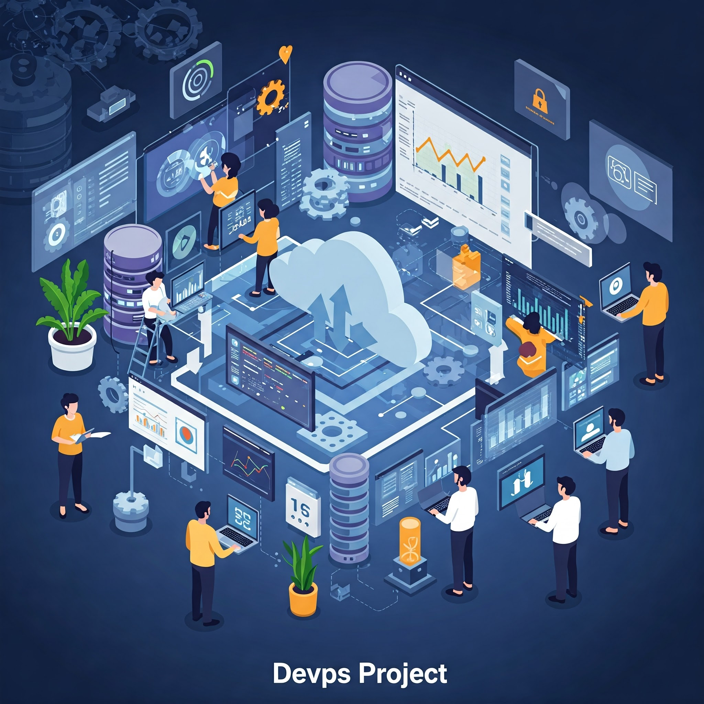
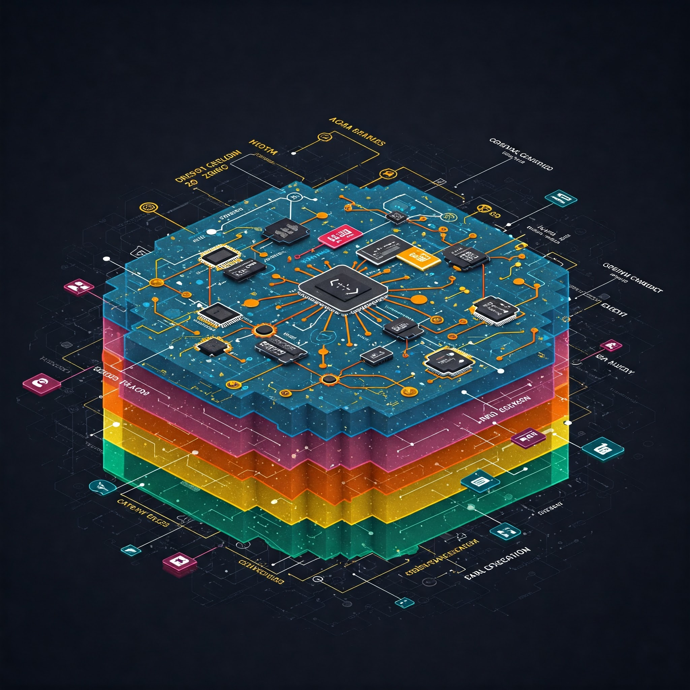
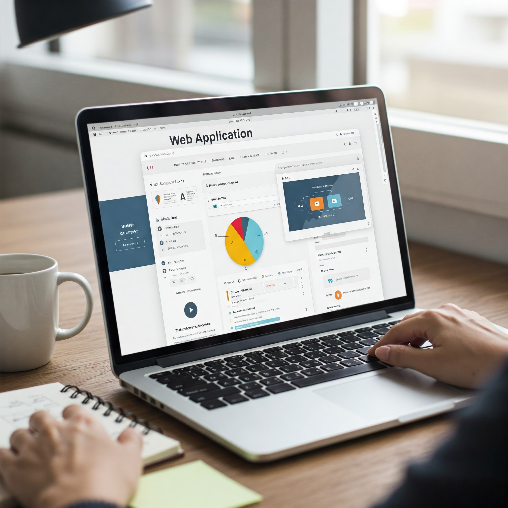
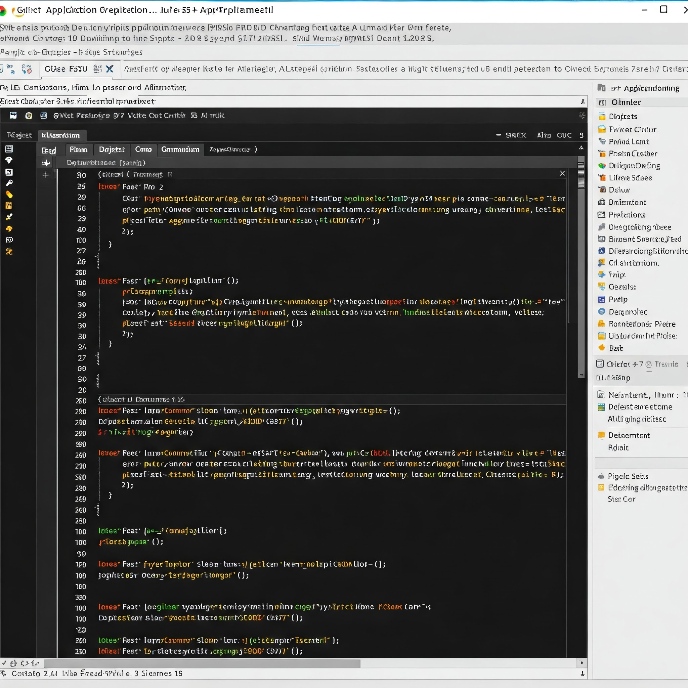
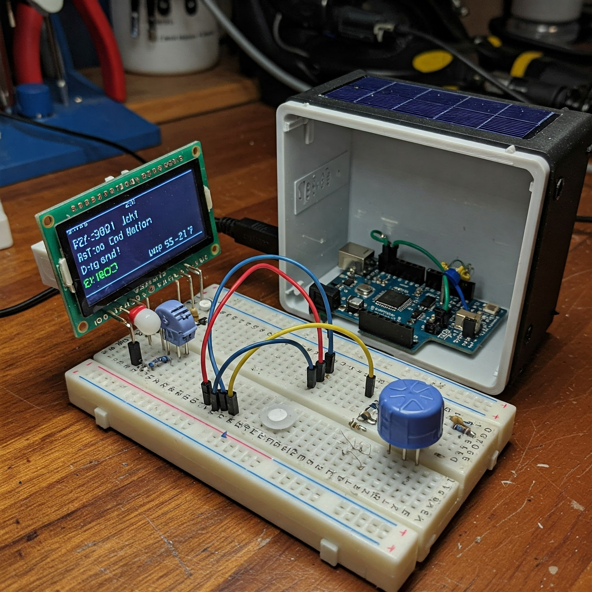

Mes Projets



Mise en place de DevOps - DEVMEDIA
Automatisation des processus de développement et de déploiement avec CI/CD, Docker et GitLab.

Établissement d'un réseau - FunkyTown
Conception et configuration d'un réseau local avec routage, VLANs, sécurité et supervision.

Application de recherche de stage
Application web facilitant la recherche de stage par mots-clés, filtres, et localisation.

Application orientée objet - C++
Développement d'une application console avec architecture orientée objet en C++.

Station météo Arduino
Conception d'une station météo embarquée avec capteurs et affichage des données en temps réel.